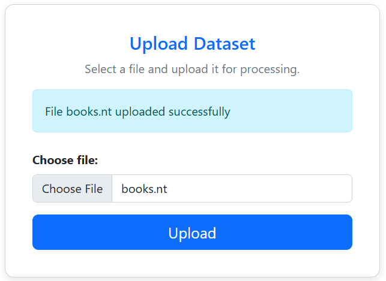
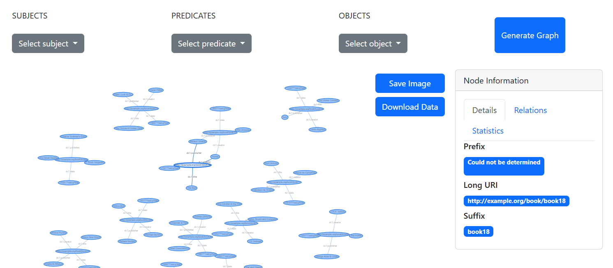
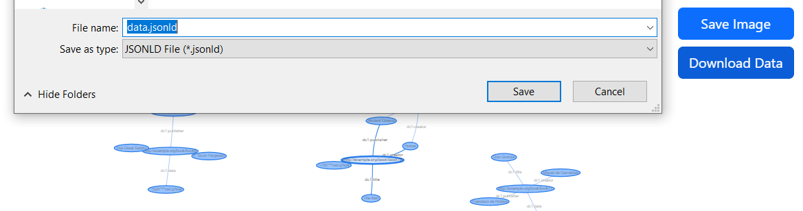
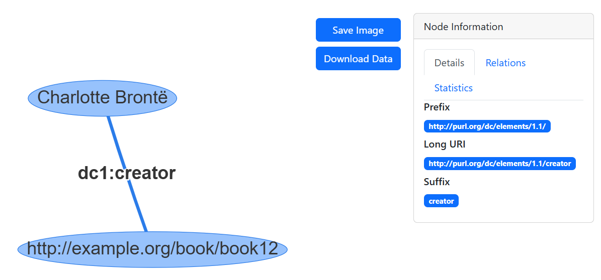
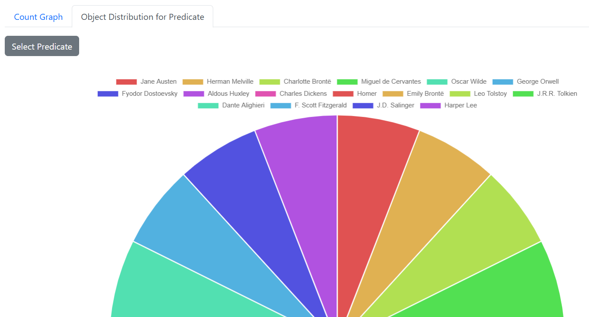

This paper presents the design and implementation of a service-oriented web application for processing and analyzing structured metadata in RDFa and HTML5 microdata formats. The system processes user-provided datasets and offers core functionalities such as visualization, classification, comparison, and matching/alignment. The system integrates internal query services (SPARQL) that process RDF data efficiently, providing structured results in HTML and JSON-LD formats. Additionally, statistical insights are derived and modeled using the RDF Data Cube vocabulary, offering valuable analytical perspectives on the extracted metadata.
The rapid growth of structured data on the web has transformed how information is shared, discovered, and analyzed. Formats like RDFa and HTML5 microdata, which enable web pages to embed machine-readable metadata, are pivotal for the semantic web and improving data interoperability. We provide a service-based web application designed to streamline the processing and analysis of RDF data. By focusing on a modular architecture, the system offers a minimal set of core functionalities that can be easily expanded and integrated. These functionalities include data visualization, classification, comparison and vocabulary matching. The data is returned in user-friendly formats such as HTML and JSON-LD, making it accessible for a wide range of users, from developers to researchers. Additionally, the application generates statistical insights modeled using the RDF Data Cube vocabulary, which helps in deriving meaningful analytical perspectives from the metadata.
The system is built on a Spring Boot application (which has the same architecture of Spring MVC) that follows a modular and service-oriented architecture, enabling efficient management of datasets and their processing.
The application is structured around multiple controllers and services that handle different tasks. The Dataset Controller is responsible for managing the lifecycle of datasets, allowing users to upload, save, and delete their data. Once uploaded, the datasets are stored and loaded into an embedded Fuseki Jena server, providing a robust platform for querying and processing RDF data. The Visualization Controller and Statistics Controller are responsible for generating dynamic visual representations and statistical insights, respectively.
The front-end of the application is built using Thymeleaf in combination with HTMX, creating a dynamic and responsive user interface. Thymeleaf serves as the primary templating engine, enabling the construction of robust HTML pages that are easily maintainable and reusable. HTMX enhances these pages by allowing seamless, asynchronous updates without requiring a full-page reload. Bootstrap is integrated to ensure that the application maintains a clean, responsive layout, allowing these visual components to adapt seamlessly across devices.
On the backend, an embedded Jena Fuseki server is utilized to construct and manage the data model. This powerful RDF data store is integrated into the application via dedicated service components, which handle the ingestion, querying, and manipulation of RDF data. The services load user-uploaded datasets into the Fuseki server, where the data is structured as RDF graphs, enabling querying using SPARQL. By leveraging the capabilities of Jena Fuseki, the system ensures efficient data processing and retrieval, which in turn supports dynamic content generation and detailed analytics presented to users.
Vis.js provides a dynamic and interactive network visualization component that is ideal for displaying RDF triplets. It enables users to explore relationships within the data by visually representing nodes and edges, making it easier to understand complex connections. The interactive features, such as zooming, panning, and node selection, enhance the user experience by allowing real-time exploration and manipulation of the network.
Chart.js is utilized to present statistical data in engaging, easy-to-understand graphs, giving users clear insights through various chart types like line, bar, and pie charts. Its simplicity and versatility make it an excellent tool for visual data analysis.
The system architecture follows the Model-View-Controller (MVC) pattern, separating concerns between data management, business logic and user interface. The data flow begins when a user uploads a dataset in the allowed format. The application processes this data and stores it in an Apache Jena Fuseki triple store. After this, user can execute queries to extract insights about data, which are visualized using various front-end tools. Also, for the future, it is possible to download the stored dataset files, or delete them from the triple store.
The Dataset Ingestion & Preprocessing module of the web application provides a seamless interface for managing datasets compatible with the embedded Jena Fuseki server. Users can upload datasets through intuitive forms that support various semantic web formats, including .ttl, .rdf, .nt, .nq, .jsonld, .trig, .owl, .trdf, .rt, .rpb, .pbrdf, .rj, and .trix. The system allows for efficient dataset storage and deletion, ensuring flexibility in managing linked data resources. These uploaded datasets serve as the foundation for other core functionalities within the application, enabling robust querying, analysis, and knowledge graph management.
The Visualization component of the web application introduces a dynamic, table-based interface designed for seamless data representation. This interface presents datasets in a paginated table format, enabling users to easily navigate through large amounts of information without overwhelming the display. Although the current implementation does not include search or filtering functionalities, the design focuses on providing a clean and straightforward user experience, ensuring that users can browse data efficiently.
In addition to its user-friendly appearance, the table is crafted to be machine-readable by incorporating RDFa attributes into its markup. This dual-format approach not only enhances accessibility for end-users but also supports automated data processing and integration with other semantic web tools. By adhering to RDFa standards, the visualization component ensures that both human readers and software agents can effectively interpret and utilize the presented data, thereby extending the application's overall interoperability and functionality.
The second visualization approach employs the vis.js network library to provide a dynamic, graphical representation of data triplets, rendered as node–edge–node structures (subject, predicate, object). Users can interact with the graph through intuitive filters that control the display of each element type—allowing for the selective addition or removal of subjects, predicates, or objects. The graph comes equipped with interactive features such as zooming, panning, and dragging, making navigation and exploration seamless even as the complexity of the network increases.
When users click on any element within the graph, a detailed information panel is presented, divided into three key sections. The first section outlines the core identifiers and terminological descriptors, offering essential context about the data's structure. The second section delves into relational properties, displaying connections such as equivalencies and subclass relationships, which are enriched by external data sourced from DBpedia and Wikidata. The third section provides statistical insights, including counts, appearance frequencies, and the in/out degrees of nodes, empowering users with both qualitative and quantitative perspectives on the dataset.
This graphical representation can be saved as an image and in json-ld format.
The Vocabulary Matching functionality is designed to identify and reconcile corresponding elements between two selected datasets. Initially, the system extracts all subjects, predicates, and objects—categorizing them based on RDF resource types (IRIs)—from the datasets provided via a form. Two distinct approaches are then combined to perform the matching. The first method involves a similarity measure, using the Levenshtein distance, based on comparing the local names extracted from each resource's identifier, applying a predetermined criterion to include the most similar pairs. In parallel, the system leverages external knowledge sources such as DBpedia and Wikidata to validate and detect equivalencies based on established semantic relationships. The matching results are organized into clearly segmented tables, categorizing findings by the type of matching: one for the string-based approach, one for DBpedia, and one for Wikidata, with each table further subdividing the data based on subjects, predicates, and objects.
The Data Analytics & Statistics section offers users comprehensive insights into dataset distributions through an intuitive, form-based interface. Users can examine the top 10 most frequently occurring subjects, predicates, and objects within a dataset. Additionally, when a specific predicate is selected, the system displays a detailed distribution of its associated objects. The visualization adapts to the nature of the data: if the objects are numeric values, the data is depicted using a bar chart, whereas non-numeric data is presented in a pie chart. These dynamic charts are rendered using the Chart.js library, ensuring interactive and aesthetically pleasing graphical representations that support effective data exploration and analysis.
The backend of the application is built using Spring Boot, with an embedded Apache Jena Fuseki server to handle RDF data storage and querying. The integration ensures that the application can manage linked data efficiently while enabling internal SPARQL querying within the application. The Fuseki server is configured to load datasets from a specified directory, making it accessible for data ingestion, retrieval, and analysis.
To facilitate interaction with the RDF data, the application is structured into specialized service layers. One set of services focuses on managing dataset files—handling ingestion, storage, and removal—ensuring that data is correctly integrated into the Jena triple store. The second set of services is dedicated to querying the Fuseki server using SPARQL, further divided into a general-purpose service for retrieving RDF data and a statistics service that extracts analytical insights, such as entity distributions and relationships. Queries are constructed dynamically using parameterized queries and query builders, improving flexibility and security.
These services interact with Spring Boot controllers, which process the retrieved data and construct the model used by the Thymeleaf template engine. The templates dynamically generate asynchronous content, ensuring that users receive up-to-date information without requiring full-page reloads. This architecture enables an efficient, responsive, and structured approach to managing and visualizing RDF datasets within the web application.
The frontend leverages Thymeleaf as the templating engine, seamlessly integrating with HTMX to
enhance dynamic content updates without requiring full-page reloads. HTMX allows for efficient
server-driven UI updates by handling AJAX requests declaratively, making it a natural fit for
Thymeleaf-based applications. The use of hx-boost further improves navigation by transforming
traditional links into asynchronous requests, enabling a smooth and responsive user experience
while keeping the complexity on the backend. This combination ensures a clean separation between
logic and presentation while maintaining high performance and minimal JavaScript overhead.
The application exposes a RESTful API that conforms to standard web architecture principles. The API is defined via an OpenAPI specification, providing a clear and organized contract for client-server interaction. Endpoints are grouped by functionality (e.g., dataset management, visualization, statistics, and filtering) to promote modularity and maintainability.
The first query dynamically constructs a SPARQL query to count how many subjects are associated
with each predicate that connects them to a specific object. In the query, the value of the variable
object is inserted into the triple pattern. The query groups the results by predicate
so that for each predicate found, the total number of related subjects is computed.
The resulting query string is similar to:
SELECT ?predicate (COUNT(?subject) AS ?count)
WHERE {
?subject ?predicate [object] .
}
GROUP BY ?predicate
Here, the variable [object] represents the dynamically inserted value. This query is useful for obtaining a statistical distribution of predicates based on a fixed object value.
The second query is designed to find pairs of properties that are considered equivalent according to the owl:equivalentProperty relation. It uses a federated query (via the SERVICE keyword) to query an external SPARQL endpoint – for example, DBpedia – to retrieve this information.
In this query, two sets of property values are injected into the query via the variables firstString and secondString. The query then checks for either direction of the equivalence relation (i.e. ?prop1 owl:equivalentProperty ?prop2 or vice versa) to ensure all possible equivalent pairs are captured. The SELECT DISTINCT ensures that duplicate pairs are not returned.
The resulting query string looks like this:
PREFIX owl: <http://www.w3.org/2002/07/owl#>
SELECT DISTINCT ?prop1 ?prop2
WHERE {
SERVICE <[dbpediaEndpoint]> {
VALUES ?prop1 { [firstString] }
VALUES ?prop2 { [secondString] }
{ ?prop1 owl:equivalentProperty ?prop2 }
UNION
{ ?prop2 owl:equivalentProperty ?prop1 }
}
}
In the example above, [dbpediaEndpoint], [firstString], and [secondString] denote variables that hold the endpoint URL and the lists of property values, respectively. This federated query design allows the system to seamlessly integrate external semantic data to enhance internal processing and data enrichment.
Our deployment strategy leverages Maven to build an executable JAR file that contains
all necessary dependencies. By configuring our pom.xml appropriately,
we package the application into a “fat JAR” during the Maven build process. This JAR is
fully self-contained and can be deployed on any machine that has a compatible Java Runtime Environment (JRE).
Once built, the JAR can be easily deployed to a specific server, where it is executed as a standalone application. This approach not only simplifies the deployment process but also ensures that the application is platform-independent, making it straightforward to deploy in various environments. Additionally, the integration of Maven with our continuous integration pipeline allows for automated builds and testing, enhancing the reliability and maintainability of our deployment process.
Users can upload a dataset containing RDF metadata through the web interface. The system validates the file format before storing it in the Apache Jena Fuseki triple store. A confirmation message is displayed once the upload is successful.
Users can explore the dataset structure using an interactive Vis.js-powered graph. RDF triplets are rendered as subject-predicate-object relationships, with filtering options to refine the visualization. Clicking on nodes displays detailed metadata and linked data sources (e.g., DBpedia, Wikidata).
After analyzing the dataset, users can export the processed data in JSON-LD format or as a PNG image. In particular, JSON-LD format ensures compatibility with other semantic web tools and facilitates integration with external applications.
Users can select a specific predicate to view its details, including associated subjects and objects. Upon selection, a dynamically generated interactive graph provides the visual insights about predicate relationships, and additional details, relations and statistics are presented in dedicated sections. This feature enhances data exploration by revealing semantic connections.
The system generates statistical insights about predicates, displaying them using dynamic pie charts. When a predicate is selected, the associated objects are analyzed, and their distribution is visualized.
Future work on the project may focus on the following enhancements: